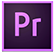
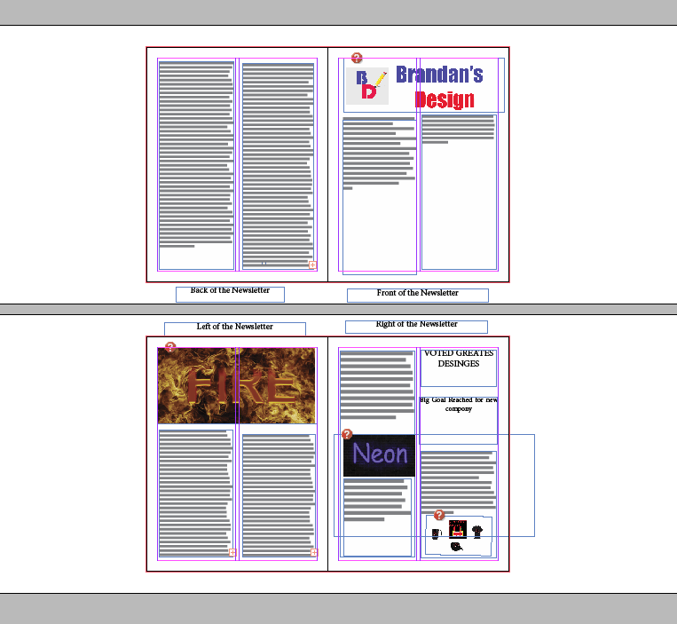
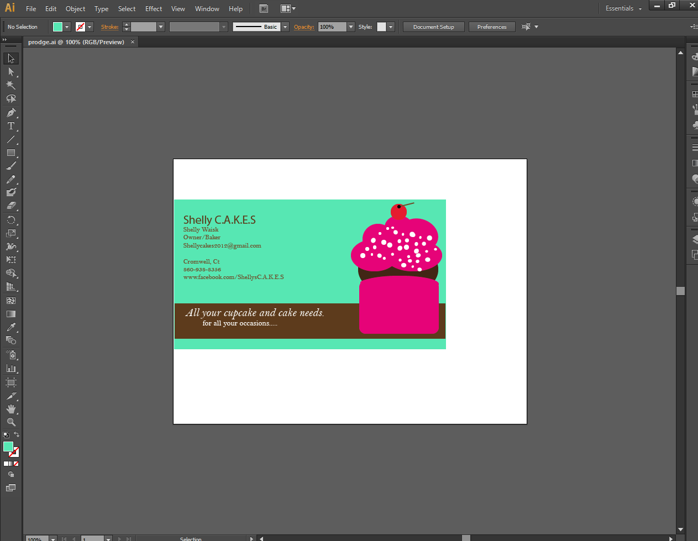
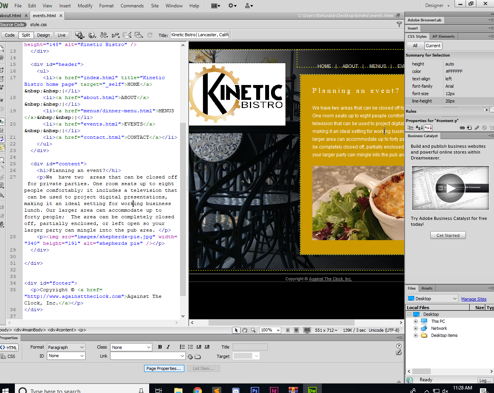

Adobe Master Collection
Adobe Premiere
Adobe Premiere is a video editing software that allows you to take videos and edit them making them look better. The applications you can use with this is making transitions editing effects making sounds taking clips of things. The people who use this application are small content creators on youtube and some movies were created in adobe premiere.
Adobe Indesign
Adobe Indesign is a desktop publishing application. It can be used to create works such as posters, flyers, brochures, magazines, newspapers, presentations. This can be used by graphic designers students and newspapers to create good looking posters. That is a little bit about the adobe Indesign application.
Adobe Photoshop

Photoshop is an image editing software. Adobe photoshop allow you to take pictures that might have some fallacies and correct them to make it look perfect. Some features are that you can correct red eye change brightness change contrast correct errors and so much more. The people who mainly use this are graphic designers and photographers. That is what Adobe photoshop is and some of its applications.

Adobe Illistrator
Adobe Illustrator is a drawing graphic design software. This application allows you to draw pictures and also allows you to make shapes and add text and make some nice things. This application can be used for anyone who wants to make something cool. That is a little bit about adobe Illustrator.
Adobe Dreamweaver
Adobe Dreamweaver is a website creation tool for the adobe collection. This application allows you to create code either html or css or whatever you want to code in and it allows you to see what your website will look like on line in the application. This app is for anyone that wants to create a webpage and wants to code. That is a little bit about the application Adobe dreamweaver.
